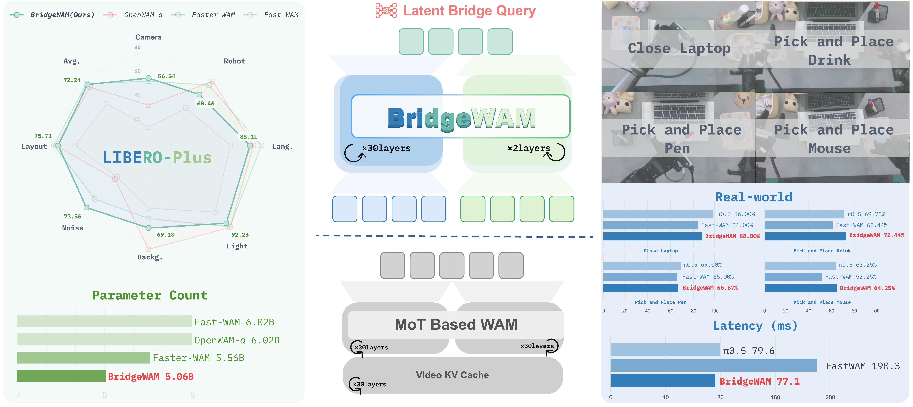
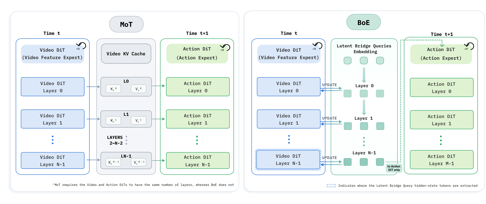
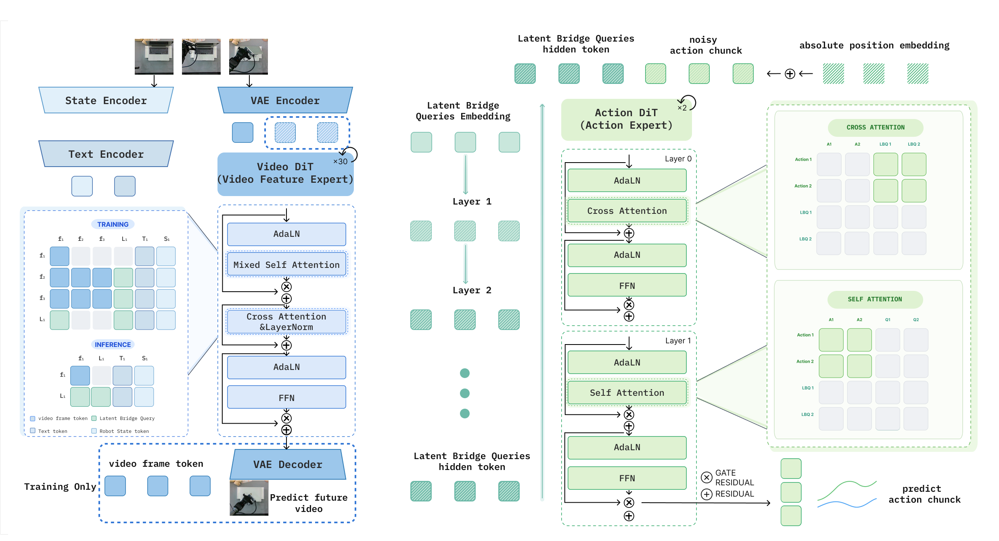
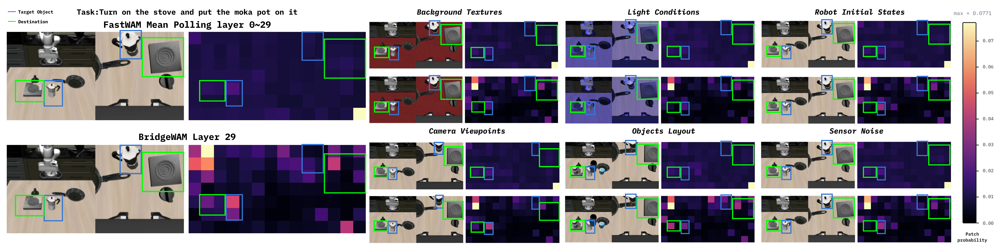

Abstract
Overview of BridgeWAM

Left: LIBERO-Plus success rates and model parameter counts. Center: Latent Bridge Queries connect a 30-layer Video Expert to a two-layer Action Expert, replacing the dense video K/V interface of MoT. Right: real-world manipulation tasks with success rates and measured inference latency.
Comparison of the BoE and MoT architectures

BoE uses Latent Bridge Queries (LBQs) to transfer action-relevant visual features between experts. Unlike MoT's matched-depth coupling, BoE decouples expert depths, enabling BridgeWAM to use only two Action DiT layers while retaining the full Video Expert for rich visual representation learning.
Model Architecture

BridgeWAM keeps the Video Expert and Action Expert modality-specific and couples them only through 32 Latent Bridge Queries (LBQs). Inside the 30-layer Video DiT, the LBQs are inserted from the first layer and, at every block, attend to the current-observation tokens (and to each other) to aggregate action-relevant visual and physical information. Crucially, the LBQs never attend to future-video tokens, so the same information boundary holds at training and inference — at test time only the current frame is processed.
After the final Video DiT layer, the LBQs are projected into the Action Expert space and read by a lightweight two-layer alternating cross–self-attention action head: a single cross-attention block retrieves information from the LBQs, followed by one self-attention block that reasons over the action chunk (“read once, reason once”). Video flow-matching and action flow-matching are optimized jointly, so action supervision propagates back through the LBQs and shapes the Video Expert toward representations better suited for control.
Results: LIBERO, LIBERO-Plus & LIBERO-Pro
Results on LIBERO and LIBERO-Pro. We report task success rates (%) on the Spatial, Object, Goal, and Long-Horizon suites, together with their average.
| Method | Embodied PT. | LIBERO | LIBERO-Pro (zero-shot) | ||||||||
|---|---|---|---|---|---|---|---|---|---|---|---|
| Spatial↑ | Object↑ | Goal↑ | Long↑ | Avg.↑ | Spatial↑ | Object↑ | Goal↑ | Long↑ | Avg.↑ | ||
| OpenVLA | ✓ | 84.7 | 88.4 | 79.2 | 53.7 | 76.5 | 40.5 | 32.0 | 25.0 | 20.5 | 29.5 |
| π0 | ✓ | 96.8 | 98.8 | 95.8 | 85.2 | 94.1 | 52.0 | 33.2 | 54.6 | 33.2 | 43.2* |
| π0.5 | ✓ | 98.8 | 98.2 | 98.0 | 92.4 | 96.9 | 55.6 | 52.2 | 48.0 | 57.0 | 53.0* |
| LingBot-VA | ✓ | 98.5 | 99.6 | 97.2 | 98.5 | 98.5 | – | – | – | – | – |
| Motus | ✓ | 96.8 | 99.8 | 96.6 | 97.6 | 97.7 | – | – | – | – | – |
| World Action Model | |||||||||||
| Fast-WAM | ✗ | 97.8 | 99.4 | 95.4 | 94.6 | 96.8 | 57.6 | 49.2 | 58.1 | 40.8 | 51.4 |
| Faster-WAM | ✗ | 99.6 | 99.8 | 98.2 | 98.2 | 99.0 | 59.6 | 52.8 | 59.6 | 45.8 | 54.5 |
| BridgeWAM (Ours) | ✗ | 99.0 | 100.0 | 97.4 | 96.6 | 98.3 | 57.8 | 55.1 | 58.4 | 43.5 | 53.7 |
* Reproduced using the same hyperparameter settings as the official LIBERO-Pro repository.
Zero-shot results on LIBERO-Plus. Task success rates (%) under seven types of perturbations and their average. “Embodied PT.” indicates whether embodied pre-training is used.
| Method | Embodied PT. | LIBERO-Plus (zero-shot) | |||||||
|---|---|---|---|---|---|---|---|---|---|
| Camera↑ | Robot↑ | Lang.↑ | Light↑ | Backg.↑ | Noise↑ | Layout↑ | Avg.↑ | ||
| Vision Language Model | |||||||||
| OpenVLA | ✓ | 0.6 | 3.9 | 38.7 | 14.2 | 38.4 | 5.4 | 42.5 | 19.7 |
| OpenVLA-OFT | ✓ | 56.4 | 31.9 | 79.5 | 88.7 | 93.3 | 75.8 | 74.2 | 69.6 |
| π0 | ✓ | 13.8 | 6.0 | 58.8 | 85.0 | 81.4 | 79.0 | 68.9 | 53.6 |
| π0-Fast | ✓ | 65.1 | 21.6 | 61.0 | 73.2 | 73.2 | 74.4 | 68.8 | 61.6 |
| World Action Model | |||||||||
| Fast-WAM | ✗ | 15.4 | 44.4 | 68.5 | 79.0 | 52.6 | 37.3 | 61.5 | 49.5 |
| OpenWAM-α | ✗ | 33.8 | 76.1 | 88.0 | 97.0 | 87.1 | 39.8 | 77.5 | 69.2 |
| Faster-WAM | ✗ | 53.8 | 71.6 | 94.7 | 96.3 | 61.3 | 63.6 | 79.1 | 73.6 |
| BridgeWAM (Ours) | ✗ | 56.5 | 60.5 | 85.1 | 92.2 | 69.2 | 73.6 | 75.7 | 72.3 |
Results: RoboTwin 2.0
Fine-grained task comparison on RoboTwin 2.0 Simulation (Clean vs. Randomized).
| Task | π0 | π0.5 | Motus | Motus (WAN2.2) | LingBot-VA | Fast-WAM | Faster-WAM | BridgeWAM (Ours) | ||||||||
|---|---|---|---|---|---|---|---|---|---|---|---|---|---|---|---|---|
| C | R | C | R | C | R | C | R | C | R | C | R | C | R | C | R | |
| Adjust Bottle | 99 | 95 | 100 | 99 | 89 | 93 | 100 | 99 | 90 | 94 | 100 | 100 | 100 | 99 | 100 | 99 |
| Blocks Ranking RGB | 80 | 63 | 92 | 85 | 99 | 97 | 92 | 88 | 99 | 98 | 100 | 100 | 100 | 100 | 99 | 99 |
| Click Bell | 71 | 48 | 99 | 66 | 100 | 100 | 100 | 100 | 100 | 100 | 100 | 100 | 100 | 100 | 99 | 99 |
| Grab Roller | 98 | 94 | 100 | 100 | 100 | 100 | 100 | 100 | 100 | 100 | 100 | 100 | 100 | 100 | 100 | 100 |
| Handover Mic | 97 | 97 | 98 | 97 | 78 | 63 | 0 | 0 | 94 | 96 | 99 | 100 | 100 | 99 | 100 | 100 |
| Lift Pot | 80 | 72 | 96 | 85 | 96 | 99 | 99 | 100 | 100 | 99 | 100 | 100 | 100 | 100 | 100 | 100 |
| Shake Bottle Horizontally | 98 | 92 | 99 | 99 | 100 | 98 | 100 | 100 | 100 | 100 | 100 | 100 | 100 | 100 | 100 | 100 |
| Shake Bottle | 94 | 91 | 99 | 97 | 100 | 97 | 99 | 100 | 100 | 97 | 100 | 100 | 100 | 100 | 100 | 100 |
| Move Pillbottle Pad | 67 | 46 | 84 | 61 | 93 | 96 | 73 | 71 | 99 | 99 | 100 | 99 | 98 | 99 | 99 | 100 |
| Move Playingcard Away | 74 | 65 | 96 | 84 | 100 | 96 | 93 | 98 | 100 | 99 | 100 | 100 | 100 | 100 | 98 | 100 |
| … (50 tasks) … | ||||||||||||||||
| Click Alarmclock | 77 | 68 | 98 | 89 | 100 | 100 | 99 | 99 | 99 | 100 | 100 | 100 | 100 | 100 | 97 | 99 |
| Dump Bin Bigbin | 88 | 83 | 92 | 97 | 95 | 91 | 79 | 77 | 89 | 96 | 97 | 96 | 97 | 98 | 98 | 97 |
| Open Laptop | 71 | 81 | 90 | 96 | 95 | 91 | 93 | 100 | 92 | 94 | 98 | 100 | 95 | 99 | 99 | 100 |
| Place Container Plate | 97 | 92 | 99 | 95 | 98 | 99 | 97 | 95 | 99 | 97 | 96 | 100 | 98 | 97 | 99 | 100 |
| Place Burger Fries | 81 | 76 | 94 | 87 | 98 | 98 | 94 | 94 | 97 | 95 | 96 | 99 | 98 | 97 | 98 | 98 |
| Place Object Stand | 82 | 68 | 91 | 85 | 98 | 97 | 86 | 88 | 99 | 96 | 90 | 94 | 95 | 96 | 96 | 98 |
| Place Phone Stand | 49 | 53 | 81 | 81 | 87 | 86 | 88 | 87 | 97 | 97 | 97 | 99 | 100 | 96 | 98 | 95 |
| Place Shoe | 76 | 76 | 92 | 93 | 99 | 97 | 96 | 95 | 98 | 98 | 96 | 99 | 97 | 98 | 97 | 96 |
| Stack Bowls Two | 94 | 95 | 95 | 96 | 98 | 98 | 96 | 93 | 94 | 98 | 92 | 98 | 98 | 96 | 99 | 97 |
| Stack Blocks Two | 93 | 79 | 97 | 100 | 100 | 98 | 92 | 87 | 100 | 100 | 100 | 100 | 100 | 100 | 100 | 99 |
| Stack Bowls Three | 77 | 75 | 77 | 71 | 79 | 87 | 76 | 86 | 86 | 83 | 80 | 81 | 83 | 78 | 88 | 90 |
| Average (%) | 65.92 | 58.40 | 82.74 | 76.76 | 88.66 | 87.02 | 77.56 | 77.00 | 92.90 | 91.50 | 91.88 | 91.78 | 92.80 | 92.30 | 89.84 | 90.22 |
C = Clean scenes, R = Randomized scenes; 100 trials per task and condition. Averages over all 50 RoboTwin 2.0 tasks.
Real-World Bimanual Manipulation
We deploy BridgeWAM on the PiPER X (SongLing) real-robot platform and evaluate four manipulation tasks — closing a laptop and picking-and-placing a drink, a pen, and a mouse — together with their out-of-distribution (OOD) settings that vary object height, type, color, position, or count. Using task-specific staged scoring, BridgeWAM reaches an average success rate of 68.92%, compared with 59.83% for Fast-WAM, while generating each action chunk in 77.1 ms on the robot. This shows that the LBQ-mediated video–action interface transfers beyond simulation and stays stable under real-world visual variation, observation noise, and execution disturbances.

Real-world rollout comparison
FastWAM on the left, BridgeWAM on the right. Play each task pair together or use the individual video controls.
Video presentation notes
Clips play at their original speed and are paired by task and filename index, not by frame-aligned robot trajectories. Clip lengths and fields of view can differ. FastWAM drink 0 omits its first 5 seconds; FastWAM mouse 0 and BridgeWAM drink 0/1/2 are cropped by 15% from the left. No additional crop, speed change, or time trim is applied for this comparison.
Drink has three paired settings. Pen and mouse show setting 0, the available matching FastWAM clip; additional BridgeWAM settings remain in the top-of-page showcase.
Ablation Studies
Action-head depth ablation on LIBERO and LIBERO-Plus. Report task success rates (%).
| Method | LIBERO | LIBERO-Plus (zero-shot) | ||||||||
|---|---|---|---|---|---|---|---|---|---|---|
| Spatial↑ | Object↑ | Goal↑ | Long↑ | Avg.↑ | Spatial↑ | Object↑ | Goal↑ | Long↑ | Avg.↑ | |
| FastWAM | 97.8 | 99.4 | 95.4 | 94.6 | 96.80 | 40.06 | 37.32 | 52.21 | 69.06 | 49.54 |
| BridgeWAM (Ours) | 99.0 | 100.0 | 97.4 | 96.6 | 98.25 | 67.17 | 60.29 | 77.64 | 84.47 | 72.24 |
| BridgeWAM 4 Layers | 97.2 | 100.0 | 97.2 | 96.6 | 97.75 | 60.26 | 54.30 | 67.44 | 84.63 | 66.56 |
| BridgeWAM 8 Layers | 97.4 | 99.8 | 97.6 | 96.8 | 97.90 | 58.44 | 49.83 | 70.69 | 83.76 | 65.50 |
| BridgeWAM 16 Layers | 98.8 | 99.4 | 96.2 | 93.4 | 96.95 | 62.13 | 52.37 | 67.94 | 80.70 | 65.66 |
| BridgeWAM 30 Layers self-cross head | 97.8 | 100.0 | 97.6 | 94.8 | 97.55 | 64.31 | 60.09 | 69.40 | 78.04 | 67.89 |
Interface and video–action coupling ablations on LIBERO and LIBERO-Plus. We report task success rates (%).
| Method | LIBERO | LIBERO-Plus (zero-shot) | ||||||||
|---|---|---|---|---|---|---|---|---|---|---|
| Spatial↑ | Object↑ | Goal↑ | Long↑ | Avg.↑ | Spatial↑ | Object↑ | Goal↑ | Long↑ | Avg.↑ | |
| FastWAM | 97.8 | 99.4 | 95.4 | 94.6 | 96.80 | 40.06 | 37.32 | 52.21 | 69.06 | 49.54 |
| BridgeWAM (Ours) | 99.0 | 100.0 | 97.4 | 96.6 | 98.25 | 67.17 | 60.29 | 77.64 | 84.47 | 72.24 |
| BridgeWAM Frozen Video DiT | 87.8 | 97.0 | 84.8 | 72.4 | 85.50 | 16.36 | 15.44 | 32.22 | 38.52 | 25.48 |
| BridgeWAM Use MoT (text_state) | 98.0 | 99.4 | 97.4 | 96.4 | 97.80 | 54.78 | 36.09 | 71.57 | 80.70 | 60.48 |
| BridgeWAM text_state_LBQ input | 96.4 | 99.2 | 97.0 | 96.2 | 97.20 | 49.07 | 44.11 | 64.70 | 79.98 | 59.29 |
| BridgeWAM Joint | 97.4 | 99.6 | 96.6 | 96.8 | 97.60 | 59.59 | 46.51 | 76.52 | 72.21 | 63.41 |
| BridgeWAM IDM | 98.8 | 97.8 | 99.0 | 96.6 | 98.05 | 64.19 | 58.55 | 76.23 | 71.49 | 67.45 |
Inference Efficiency
Inference efficiency on LIBERO. Both methods use a 30-layer Video DiT and are profiled
on the same H20Z GPU in bfloat16 with an action horizon of 32 and 10 denoising steps.
| Method | Architecture | Runtime-Shape FLOPs (T) | Acceleration | Peak Mem. (MB)↓ | ||||
|---|---|---|---|---|---|---|---|---|
| Video | Action | Video↓ | Action↓ | Total↓ | Latency (ms)↓ | Speedup↑ | ||
| Fast-WAM | 30 | 30 | 1.005 | 1.043 | 2.048 | 405.91 | 1.00× | 23,773.86 |
| BridgeWAM (Ours) | 30 | 2 | 1.432 | 0.028 | 1.460 | 88.05 | 4.61× | 21,912.21 |
Action-Conditioned Visual Routing
To visualize which visual information is preferentially accessed by the Action Expert, we construct an action-conditioned visual-routing map. For BridgeWAM, we use the Action Expert's attention scores over the latent bridge queries as query-importance weights and apply them to the corresponding LBQ-to-video-patch attention maps from the Video Expert. For Fast-WAM, we directly aggregate the action-to-visual-token attention across all Video-DiT layers. The resulting patch-space maps reveal the visual information preferentially routed toward action prediction; they should be interpreted as routing visualizations rather than strict causal attributions.

Action-conditioned visual routing maps. The top row shows Fast-WAM attention averaged across Video-DiT layers, while the bottom row shows the LBQ-mediated routing at the final Video-DiT layer of BridgeWAM. The columns cover variations in background texture, lighting, camera viewpoint, robot initial state, object layout, and sensor noise.
Conclusion
We presented Bridge-of-Experts (BoE), a differentiable Latent Bridge Query interface that aligns video representations with action prediction and enables selective retrieval by the Action Expert. Reusing the compact bridge supports independent expert depths and efficient conditioning, while our experiments validate its promise for robust, longer-horizon control across diverse settings.